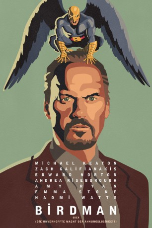

Auszeichnungen: 4 Oscars gewonnen für 5 Oscars nominiert 2 GoldenGlobes gewonnen 1 BAFTA-Awards gewonnen
 gesehen am 09.03.2015
gesehen am 09.03.2015Alternativ: Birdman or (The Unexpected Virtue of Ignorance)
Auszeichnungen: 4 Oscars gewonnen für 5 Oscars nominiert 2 GoldenGlobes gewonnen 1 BAFTA-Awards gewonnen gesehen am 09.03.2015
 
 IMDB-Wertung: 7.7 / 10
IMDB-Wertung: 7.7 / 10  Metascore:
Metascore: 
Die Karriere von Riggan Thomson ist quasi am Ende. Früher verkörperte er den ikonischen Superhelden Birdman, doch heutzutage gehört er zu den ausgedienten Stars einer vergangenen Ära. In seiner Verzweiflung versucht er, ein Broadway-Stück auf die Beine zu stellen, um sich und allen anderen zu beweisen, dass er noch nicht zum alten Eisen gehört. Als die Premiere näher rückt, fällt sein Hauptdarsteller aus, der daraufhin durch den neurotischen Mike Shiner ersetzt werden muss. Zusätzlich muss Riggan sich mit seiner Freundin Laura herumschlagen, der er eine Nebenrolle verschafft hat. Unterstützt wird er immerhin von seiner Tochter Sam, die gerade einen Drogenentzug hinter sich gebracht hat, und von seiner Ex-Frau Sylvia, die öfter herein schneit und alles am Laufen halten will.
Jahr: 2014
Dauer: 119 Minuten
FSK: 12
Land: USA Studio: Fox Searchlight PicturesTonspuren: DTS - ,
Untertitel: Deutsch,
Auflösung: 1080p (1920x1040) Größe: 6307 MB
Regisseur: Alejandro G. Iñárritu
Drehbuch: Alejandro G. Iñárritu, Nicolás Giacobone, Alexander Dinelaris, Armando Bo, Raymond Carver
Soundtrack: Antonio Sanchez
Darsteller:
 Michael Keaton als Riggan
Michael Keaton als Riggan Zach Galifianakis als Jake
Zach Galifianakis als Jake Naomi Watts als Lesley
Naomi Watts als Lesley Damian Young als Gabriel
Damian Young als Gabriel Merritt Wever als Annie
Merritt Wever als Annie Edward Norton als Mike
Edward Norton als Mike Clark Middleton als Sydney
Clark Middleton als Sydney Amy Ryan als Sylvia
Amy Ryan als Sylvia Bill Camp als Crazy Man
Bill Camp als Crazy Man Anna Hardwick als Blonde Reporter
Anna Hardwick als Blonde Reporter Raymond Mamrak als Annoying Tourist , uncredited
Raymond Mamrak als Annoying Tourist , uncreditedDatei: X:\2014(A-F)\Birdman oder (Die unverhoffte Macht der Ahnungslosigkeit) (2014, FSK12, 1920x1040).mkv seit 06.02.2015
Festplatte: HD 2013(I-Z)-2014(A-Z)
 Es gibt insgesamt 119 Filme in der Gruppe '2014(A-F)'
Es gibt insgesamt 119 Filme in der Gruppe '2014(A-F)'